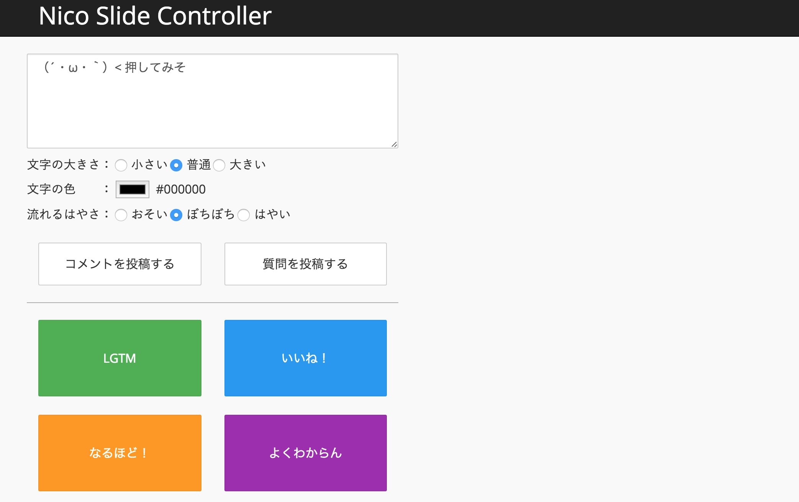
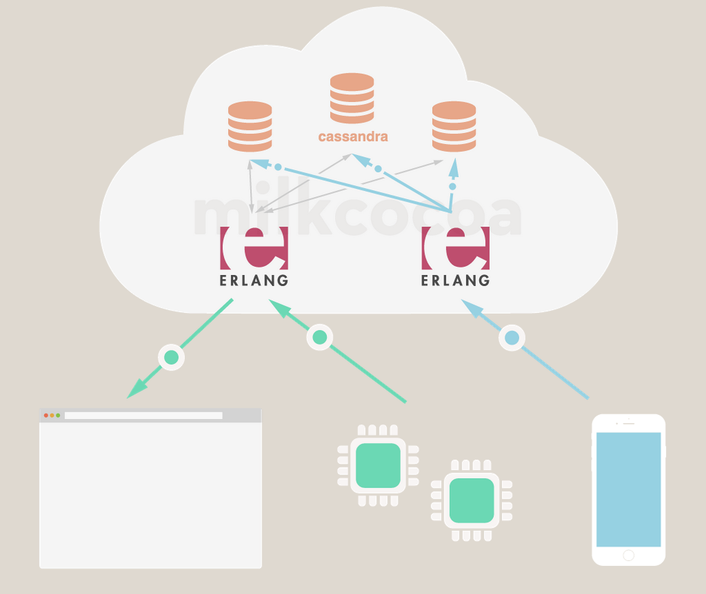
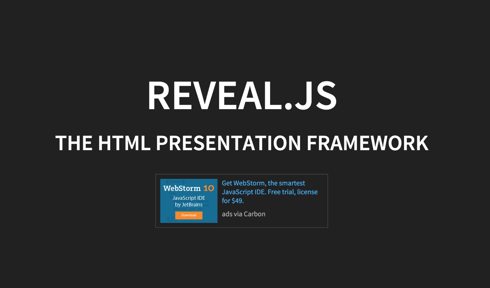

REVEAL.jsとMilkcocoaで双方向LTする
@rei_m / Rei Matsushita
Application Engineer
- Skills
- JavaScript
- Node.js
- Android Java
- C#
- Elixir（今ハマり中）
- Sites
- はてなブログ : もやもやエンジニア
- Facebook : https://www.facebook.com/rei.matsushita
- アプリ : 新刊カレンダー
- 本日のアジェンダ
- 1) いきなりデモ
- 2) Milkcocoaの紹介
- 3) REVEAL.jsの紹介
このURLを開いてください。PC・スマホどちらでも大丈夫です。
`nico_slide`でググってGithubのページを開き、Readmeから飛ぶと早いです。
機能の紹介

Milkcocoaの紹介

使い方
Milkcocoaからデータストアを取得する
var messageDataStore = (function() {
var milkcocoa = new MilkCocoa("hogehoge.mlkcca.com");
return milkcocoa.dataStore("zouhyou1");
})();
メッセージをPublishする
messageDataStore.send({
content: "sendはデータストアに保存されない"
});
messageDataStore.push({
content: "pushはデータストアに保存される"
});
使い方
MilkcocoaからSubscribeされたメッセージを受け取るコールバック
messageDataStore.on('push', function(pushed) {
console.dir(pushed);
});
Milkcocoaに保存されているデータをすべて取得する
messageDataStore.stream().next(function(err, data) {
data.map(function(v) {
・・・
});
});
超お手軽ですね！
REVEAL.jsの紹介

使い方
Sectionタグの中身が1ページ分になります。これを量産するだけでスライドっぽくなります。
<section>
<div class="text--medium">
使い方
</div>
<div class="sample">
<span class="sample__title">Sectionタグの中身が1ページ分になります</span>
</div>
</section>
まとめ
- Milkcocoaを使うと簡単にWebSocketを使ったメッセージのPub/Subが実装できます
- REVEAL.jsを使うとHTML/CSSベースでスライドが作れます
- 2つ組み合わせるとリスナー参加型のLTができちゃいます
Have a nice Ligtning Talk !!